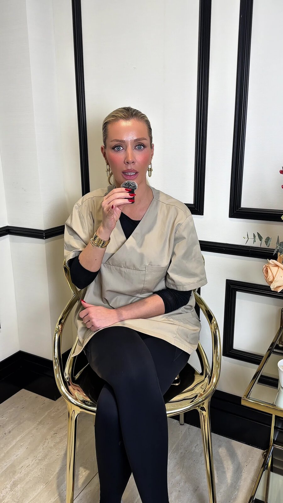
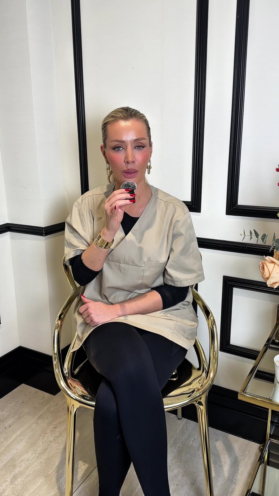
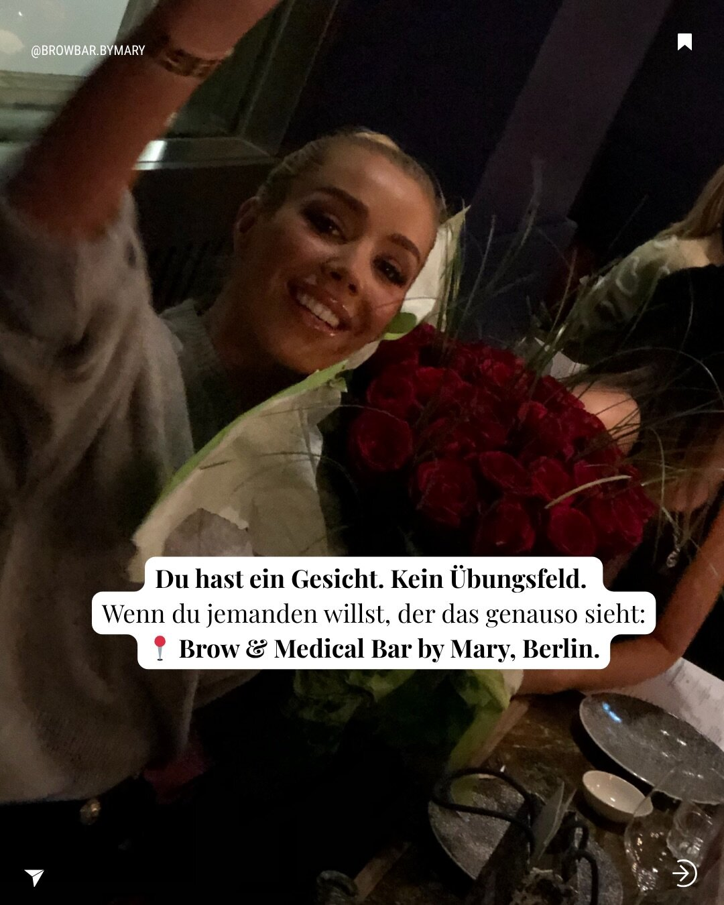
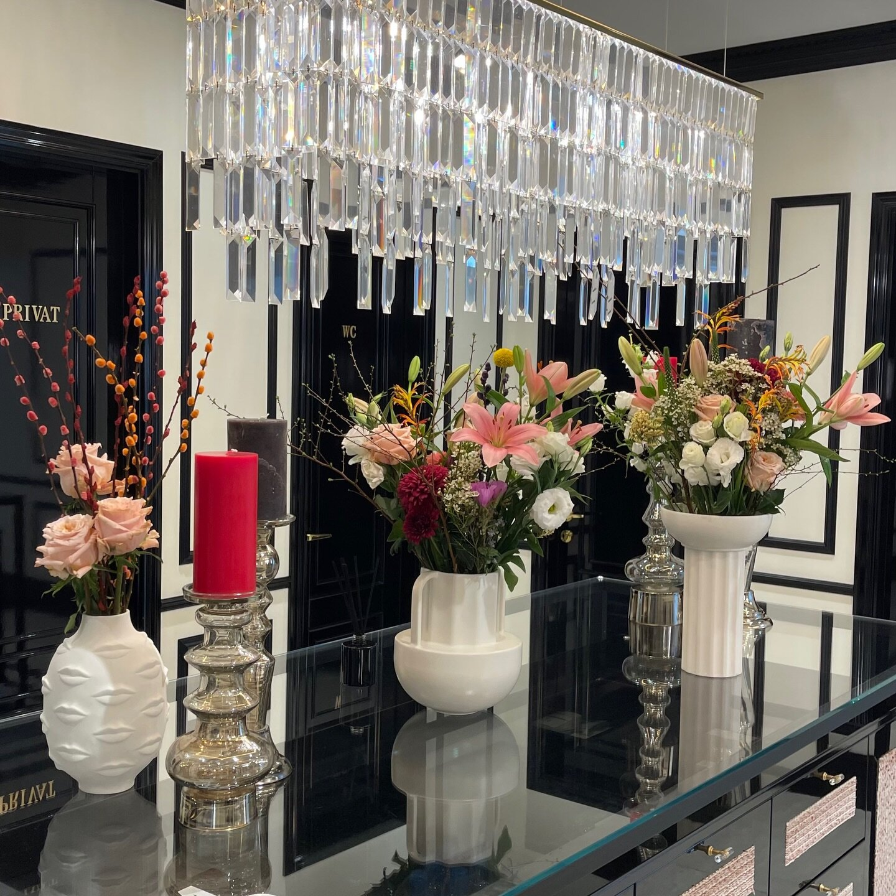

Mary — Inhaberin
Eine Praxis ist mehr als ein Behandlungsraum. Sie ist Ausdruck einer Haltung. Mary verbindet fachliche Expertise mit dem, was in der Ästhetik oft fehlt: Zeit, Ehrlichkeit und ein realistischer Blick auf das Ergebnis.
Beratung vereinbaren
Philosophie
Medizin, kein Marketing
In der Ästhetik sind die Versprechen oft groß. Die Realität ist nuancierter. Jede Haut reagiert anders. Jedes Gesicht hat eine eigene Anatomie. Was bei einer Person wirkt, kann bei der nächsten falsch sein. Deshalb beginnt jede Behandlung in unserer Praxis mit einer ehrlichen Einschätzung — nicht mit einem Verkaufsgespräch.
Manchmal bedeutet das, von einer Behandlung abzuraten. Manchmal heißt es, einen langfristigen Plan vorzuschlagen statt eines schnellen Eingriffs. Immer aber bedeutet es: Sie wissen vorher, was zu erwarten ist, was nicht, und warum.
Was die Praxis besonders macht
Vier Prinzipien
Fachliche Diagnostik vor jedem Eingriff
Hautanalyse, anatomische Einschätzung, medizinische Anamnese. Keine Behandlung beginnt ohne fundierte Grundlage.
Ehrliche Empfehlung
Wir empfehlen nur, was zu Ihrem Hautbild und Ziel passt. Ein "Nein" gehört dazu — auch wenn es uns Umsatz kostet.
Natürliche Ergebnisse
Das Ziel ist nie, anders auszusehen, sondern entspannt-frisch zu wirken. Übertreibungen passen nicht zu uns.
Modernste Technik, fachlich angewandt
Wir investieren konsequent in Premium-Geräte (Potenza RF, PicoPlus, Clarity II, HydraFacial) — und nutzen sie mit medizinischer Präzision.
Eindrücke
Praxis & Heilpraktikerin



Lernen Sie Mary persönlich kennen
Erstgespräche sind unkompliziert. Wir hören zu, schauen genau hin und beraten ehrlich.
Beratungstermin vereinbaren